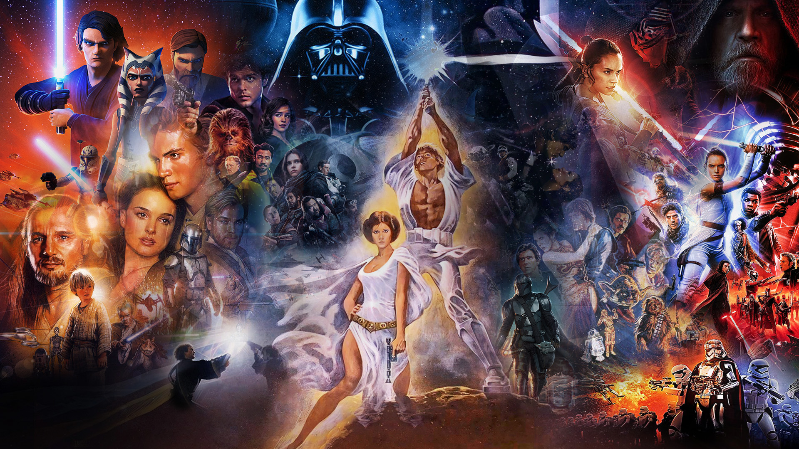
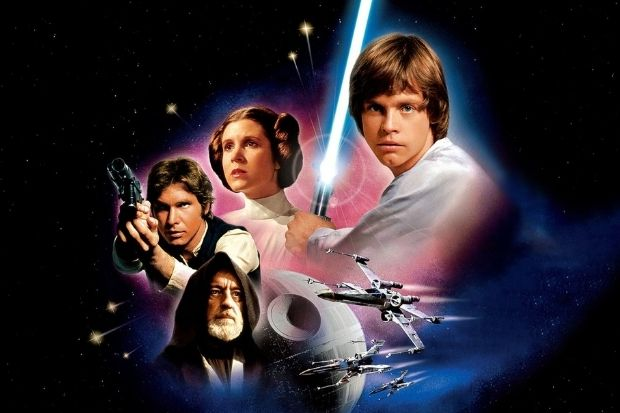

Em meados dos anos 1970, um jovem e visionário cineasta chamado George Lucas decidiu desafiar os padrões de Hollywood. Inspirado por antigos seriados de ficção científica (como Flash Gordon), filmes de samurai de Akira Kurosawa e estudos sobre mitologia de Joseph Campbell, ele começou a esboçar uma ópera espacial ousada, complexa e totalmente inovadora.
O que parecia uma aposta arriscada para os estúdios da época transformou-se, em 1977, com o lançamento de *Star Wars: Uma Nova Esperança*, em um dos maiores fenômenos culturais da história da humanidade. Lucas não apenas criou uma franquia de sucesso; ele revolucionou a indústria de efeitos visuais com a fundação da Industrial Light & Magic (ILM), redefiniu o mercado de licenciamento de brinquedos e deu vida a uma mitologia moderna que atravessa gerações.
Lançado originalmente apenas como *Star Wars*, o filme que hoje conhecemos como *Episódio IV: Uma Nova Esperança* estreou em pouquíssimas salas de cinema nos Estados Unidos em 25 de maio de 1977. Ninguém, nem mesmo os executivos da distribuidora, esperava as filas quilométricas que se formaram instantaneamente dobrando quarteirões.
O longa apresentou ao mundo elementos que se tornaram eternos: a jornada do jovem Luke Skywalker, a sabedoria de Obi-Wan Kenobi, a audácia de Han Solo e a imponência sombria de Darth Vader. Com uma trilha sonora memorável composta por John Williams, o filme faturou mais de 775 milhões de dólares, conquistou 6 estatuetas do Oscar e fincou de vez os alicerces de uma galáxia inteira de histórias.

Compreende o período em que a galáxia era governada pelo Senado Galáctico e protegida pela nobre Ordem Jedi. Esta era retrata os eventos das Prequels (Episódios I, II e III), mostrando as intrigas políticas arquitetadas por Palpatine, o início das Guerras Clônicas e a trágica corrupção do jovem Anakin Skywalker, culminando na execução da Ordem 66.
O período mais sombrio da galáxia, onde o Império Galáctico governa com punho de ferro sob o comando do Imperador e de Darth Vader. Esta era engloba a Trilogia Clássica (Episódios IV, V e VI), focando no nascimento da Aliança Rebelde, o treinamento de Luke Skywalker para se tornar um Jedi e a épica batalha espacial para destruir a Estrela da Morte.
Anos após a queda de Vader, os remanescentes imperiais se reorganizam sob a bandeira da Primeira Ordem. Esta era, retratada nas Sequels (Episódios VII, VIII e IX), acompanha a busca por Luke Skywalker, a ascensão de Rey nos caminhos da Força e o conflito interno de Kylo Ren enquanto a Resistência luta para restaurar de vez a paz.